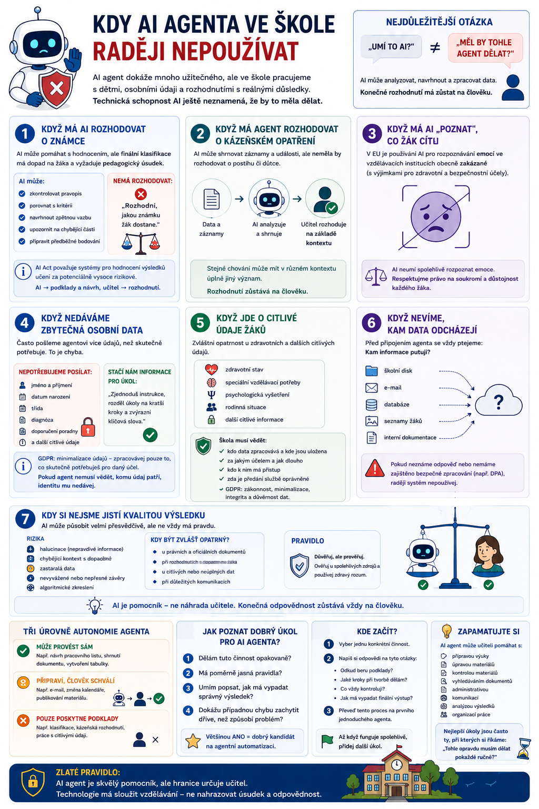

AI agent dokáže připravovat materiály, vyhledávat v dokumentech, kontrolovat texty, pracovat s nástroji a automatizovat celé pracovní postupy. Právě proto ale musíme dobře vědět, kde jeho použití končí. Ve škole totiž nepracujeme pouze s dokumenty a tabulkami. Pracujeme s dětmi, osobními údaji, hodnocením a rozhodnutími, která mohou mít skutečné důsledky pro konkrétního člověka.

Nejdůležitější otázka není „Umí to AI?“
Když objevíme nový AI nástroj, snadno sklouzneme k otázce:
„Dokázal by tohle udělat agent?“
Často ano.
Lepší otázka ale zní:
„Měl by tohle agent dělat?“
To jsou dvě úplně rozdílné věci.
AI agent může být technicky schopný:
- analyzovat výsledky žáků,
- navrhnout známku,
- přečíst školní dokumentaci,
- vyhodnotit chování,
- vytvořit zprávu rodičům,
- pracovat s osobními údaji.
To ještě neznamená, že mu máme všechny tyto činnosti bez dalšího svěřit.
1. Když má AI rozhodovat o známce
AI může být užitečným pomocníkem při hodnocení.
Může například:
- zkontrolovat pravopis,
- porovnat odpověď s hodnoticími kritérii,
- navrhnout zpětnou vazbu,
- upozornit na chybějící části,
- připravit předběžné bodování.
Ale velký rozdíl je mezi:
a:
Finální klasifikace má reálný dopad na žáka.
Navíc AI nemusí znát celý pedagogický kontext: dlouhodobou práci žáka, okolnosti zadání, domluvené podmínky nebo třeba to, zda byla určitá chyba už součástí předchozího hodnocení.
Proto bych používala:
učitel → rozhodnutí
Některé AI systémy používané k hodnocení výsledků vzdělávání patří podle evropského AI Actu mezi oblasti, které mohou být klasifikovány jako vysoce rizikové. Evropská pravidla výslovně uvádějí například systémy určené k hodnocení výsledků učení či řízení vzdělávacího procesu.
2. Když má agent rozhodovat o kázeňském opatření
Podobná hranice platí pro chování žáků.
Agent může například:
Neměl by ale rozhodovat:
Taková rozhodnutí vyžadují lidský úsudek a znalost situace.
Stejné chování může mít v různém kontextu úplně jiný význam.
AI vidí data, která jí poskytneme.
Nevidí nutně vztahy ve třídě, předchozí konflikt, rodinnou situaci ani další okolnosti, které učitel zná.
3. Když má AI „poznat“, co žák cítí
Tohle není pouze otázka vhodnosti.
V Evropské unii je používání AI pro rozpoznávání emocí ve vzdělávacích institucích obecně zakázané, s úzkými výjimkami například pro zdravotní nebo bezpečnostní důvody.
Takže představa:
Kamera bude při hodině pomocí AI vyhodnocovat, kdo se nudí, kdo je nervózní nebo kdo dává pozor.
není žádná elegantní modernizace výuky.
Je to přesně oblast, u které evropská regulace zatáhla za ruční brzdu.
A podle mě celkem správně.
Výraz obličeje není spolehlivý teploměr lidské psychiky.
4. Když agent nepotřebuje osobní údaje, ale stejně mu je dáváme
Tohle je jedna z nejčastějších chyb.
Potřebujeme například přizpůsobit pracovní list.
Agentovi pošleme:
Jenže pro vytvoření materiálu mohl potřebovat pouze:
Proč mu tedy dávat zbytek?
GDPR stojí mimo jiné na principu minimalizace údajů: organizace má zpracovávat pouze osobní údaje, které skutečně potřebuje pro daný účel. Platí také účelové omezení, přesnost, omezení doby uchování a odpovědnost za zabezpečení dat.
Praktické pravidlo je jednoduché:
5. Když jde o citlivé údaje žáků
Ještě větší opatrnost je potřeba u informací týkajících se například:
- zdravotního stavu,
- speciálních vzdělávacích potřeb,
- psychologických vyšetření,
- rodinné situace,
- dalších zvlášť citlivých údajů.
Tady bych rozhodně nepoužívala běžný veřejný AI nástroj stylem:
zkopíruji celý dokument a uvidím, co mi AI poradí.
Škola musí vědět:
- kdo data zpracovává,
- kde jsou uložena,
- za jakým účelem,
- jak dlouho,
- kdo k nim má přístup,
- zda je vůbec jejich předání dané službě oprávněné.
Veřejné instituce i další organizace musí při zpracování osobních údajů respektovat zásady GDPR včetně zákonnosti, minimalizace dat a integrity a důvěrnosti.
6. Když nevíme, kam data odcházejí
Před připojením agenta k nějaké službě bych se vždy ptala:
Kam informace putují?
Pokud odpověď zní:
Nevím, ale ono to funguje skvěle.
tak je to dobrý důvod systém zatím nepoužít.
Zvlášť pokud má agent získat přístup k:
- školnímu disku,
- e-mailu,
- databázi,
- seznamům žáků,
- interní dokumentaci.
U nástroje pro generování obrázku na téma středověk můžeme být mnohem benevolentnější.
U agenta připojeného k celé školní infrastruktuře opravdu ne.
7. Když agent dostal zbytečně mnoho oprávnění
AI agent může mít různé nástroje.
Například:
je jedna věc.
je něco úplně jiného.
Stejně tak:
není totéž jako:
Proto platí princip minimálních oprávnění:
Pokud má vyhledávat ve směrnicích, nepotřebuje právo je měnit.
Pokud připravuje e-maily, nemusí je automaticky odesílat.
Pokud analyzuje tabulku, nepotřebuje přístup k celému školnímu disku.
8. Když jedna chyba může mít velké následky
Položme si otázku:
Co se stane, když se agent splete?
Pokud vytvoří pracovní list s jednou špatnou otázkou, učitel ji pravděpodobně při kontrole opraví.
Následek je malý.
Ale pokud agent:
- odešle nesprávnou informaci rodičům,
- změní důležitý záznam,
- smaže soubor,
- vytvoří chybný zápis,
- předá osobní údaje nesprávnému příjemci,
dopad může být podstatně větší.
Čím dražší je chyba, tím méně autonomie bych agentovi dávala.
9. Když výsledek nikdo neumí zkontrolovat
Tohle pravidlo je podle mě dost podceňované.
AI bych nerada nechávala samostatně vykonávat práci, jejíž správnost neumí nikdo zodpovědný ověřit.
Představme si například, že si pomocí vibe codingu vytvoříme aplikaci pracující s přihlašovacími údaji žáků.
AI oznámí:
Výborně.
Ale kdo to ověřil?
AI?
Stejná AI, která to naprogramovala?
To není zrovna nejsilnější bezpečnostní audit na světě.
U oblastí jako:
- kyberbezpečnost,
- osobní údaje,
- autentizace,
- právní procesy,
- účetnictví,
musí být výstup kontrolovatelný někým, kdo dané oblasti opravdu rozumí.
10. Když agent pracuje se zastaralými dokumenty
Agent může být technicky bezchybný a přesto odpovídat špatně.
Stačí mu dát špatné zdroje.
Představme si školní RAG systém.
Ve znalostní databázi má:
a zároveň:
Učitel se zeptá na aktuální pravidlo.
Pokud systém vytáhne starý dokument, může vytvořit dokonale formulovanou, ale nesprávnou odpověď.
Proto musí být jasné:
- která verze dokumentu je platná,
- kdy byla aktualizována,
- zda existují duplicity,
- z čeho odpověď vychází.
Agent nad neudržovaným úložištěm není znalostní systém.
11. Když po agentovi chceme pedagogický úsudek bez kontextu
Představme si otázku:
„Je tento žák líný, nebo učivu nerozumí?“
AI může začít analyzovat.
Ale chybí jí něco zásadního:
Neviděla jeho práci během roku.
Neví, co se děje doma.
Nezná jeho vztah ke třídě.
Neví, zda se minulý týden něco změnilo.
Agent může pomoci formulovat otázky:
Co bych měl ověřit?
Může pomoci hledat vzorce v dostupných informacích.
Ale neměl by suplovat pedagogickou diagnostiku pouze na základě několika řádků dat.
12. Když se snažíme automatizovat špatný proces
Představme si administrativní postup, který obsahuje:
Nápad:
Uděláme na to AI agenta.
Možná.
Ale nejprve bych položila jinou otázku:
Proč ten proces vůbec vypadá takhle?
Automatizace špatného procesu může znamenat pouze:
Někdy je lepší odstranit zbytečný krok než nad něj postavit umělou inteligenci.
13. Když používáme agenta jen proto, že je to moderní
Ne každý problém potřebuje AI agenta.
Pokud úkol zní:
Každý pátek zkopíruj hodnotu z buňky A do buňky B.
potřebujeme pravděpodobně jednoduchou automatizaci.
Ne jazykový model, paměť, MCP a tři agenty, kteří nad tím budou pořádat digitální poradu.
Agent dává smysl zejména tehdy, když práce obsahuje:
- proměnlivé vstupy,
- práci s přirozeným jazykem,
- rozhodování mezi několika postupy,
- vyhledávání informací,
- potřebu přizpůsobit postup situaci.
Pevně dané procesy často zvládne klasická automatizace levněji a spolehlivěji.
Pozor také na AI Act
Evropská regulace rozlišuje použití AI podle rizika.
Ve vzdělávání mohou mezi vysoce rizikové případy patřit například některé systémy používané k hodnocení výsledků učení, řízení vzdělávacího procesu nebo monitorování podvádění. Podle současného harmonogramu mají pravidla pro vysoce rizikové systémy v oblastech včetně vzdělávání začít platit od 2. prosince 2027.
Zároveň už od 2. srpna 2026 platí některé povinnosti AI Actu týkající se transparentnosti – mimo jiné pro určité situace, kdy lidé přímo komunikují s AI nebo jsou vystaveni konkrétním typům AI generovaného obsahu.
Pokud tedy škola začne nasazovat AI agenta přímo vůči žákům, už nejde jen o otázku:
„Funguje nám to?“
Musíme řešit také:
„Jaký typ systému vlastně provozujeme a jaké povinnosti se na něj vztahují?“
Jednoduchý semafor pro školní AI agenty
Pro běžnou praxi se mi osvědčuje velmi jednoduché rozdělení.
🟢 Zelená – agent může poměrně samostatně
Například:
- vytvoření návrhu pracovního listu,
- formátování textu,
- shrnutí veřejného dokumentu,
- příprava aktivit,
- kontrola pravopisu,
- vytvoření osnovy.
🟡 Žlutá – agent připraví, člověk schválí
Například:
- e-mail rodičům,
- návrh hodnocení,
- práce s interní dokumentací,
- změna kalendáře,
- zveřejnění materiálu,
- individualizace na základě osobních údajů.
🔴 Červená – velká opatrnost nebo vůbec ne
Například:
- autonomní klasifikace,
- kázeňské rozhodování,
- nakládání s citlivými osobními údaji bez jasného právního a technického rámce,
- nekontrolované změny školních databází,
- automatické rozhodování s významným dopadem na žáka,
- rozpoznávání emocí žáků.
Pět otázek před zapnutím agenta
Než dáme AI agentovi nový úkol nebo nástroj, stačí si položit pět otázek:
- Jaká data k tomu opravdu potřebuje?
- Co přesně smí udělat?
- Co se stane, když udělá chybu?
- Kdo výsledek zkontroluje?
- Dokážeme zjistit, co agent provedl a z jakých informací vycházel?
Pokud na některou z nich neumíme rozumně odpovědět, agent ještě není připravený na samostatnou práci.
Nejbezpečnější agent není ten, který nic neumí
Smyslem samozřejmě není ze strachu všechny agentní systémy zakázat.
Pak bychom přišli o velkou část jejich přínosu.
Cílem je něco jiného:
Pracovní list?
Klidně ho nechme vytvořit celý.
Návrh e-mailu?
Ano, ale před odesláním ho zkontrolujeme.
Rozhodnutí ovlivňující budoucnost konkrétního žáka?
Tam bych volant člověku z ruky rozhodně nebrala.
Zapamatujte si
AI agent není nebezpečný proto, že je „chytrý“.
Riziko vzniká hlavně kombinací:
Proto ve škole platí:
+ minimum oprávnění
+ ověřitelné zdroje
+ lidská kontrola u důležitých kroků
Agent může být mimořádně schopný pomocník.
Ale čím významnější rozhodnutí děláme o konkrétním člověku, tím méně bychom měli přemýšlet o tom, jak učitele z procesu odstranit, a tím více o tom, jak mu AI může dodat lepší podklady pro jeho vlastní rozhodnutí.
Kam pokračovat
Po článcích „Jak navrhnout svého prvního AI agenta“, „10 úkolů, které může AI agent převzít učiteli“ a tomto bezpečnostním dílu bych navázala ještě jedním velmi praktickým tématem:
Protože to je přesně další zmatek, který teď kolem agentů vzniká. Ne všechno, co dělá několik kroků za sebou, je agent — a spoustu školních problémů je lepší vyřešit obyčejnou automatizací než do nich cpát AI.